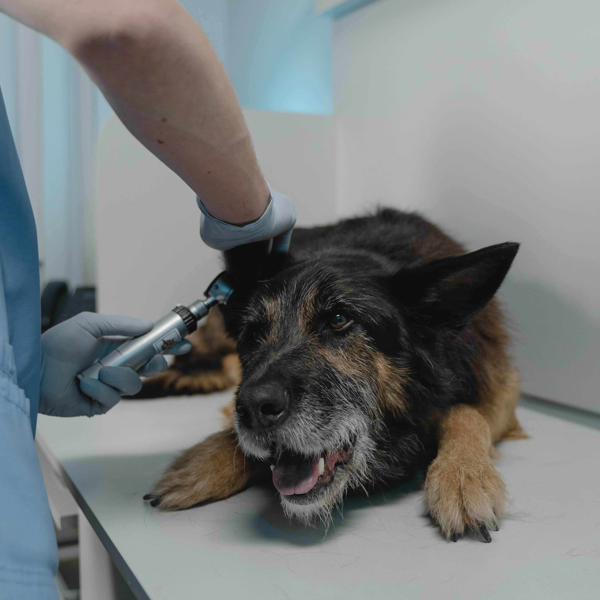

Contamos com estrutura completa para atendimentos e exames cardiológicos, tais como: Eletrocardiograma e Ecocardiograma. Além disso, são realizamos procedimentos intervencionistas, tais como drenagens de líquidos que podem ficar ao redor do coração (efusões pericárdicas).
Oncologia
Assim como nos seres humanos, o câncer em animais pode assumir diferentes formas e níveis de gravidade. Portanto, o tratamento deve ser sempre individualizado. O médico oncologista veterinário é o responsável pelo diagnóstico, estadiamento e condução do tratamento do pet.

Geriatria
Com o auxílio do médico veterinário geriatra, é possível compreender as alterações pelas quais o pet está passando. Este profissional diagnostica e diferencia doenças, realiza tratamentos e pode propor mudanças de hábitos capazes de aumentar a expectativa de vida dos animais.
Depoimentos
Equipe maravilhosa! Atendimento de primeira!! Precisei de atendimento para meu pet idosinho as 4:30h e fomos muito bem recebidos e atendidos! Eles tem um respeito imenso pelos animais e seus tutores. Indico de olhos fechados!
Adão Souza
Atendimento humanizado, pessoal muito solícito para orientar e depois mandam os boletins sobre a situação do cachorro. Agradecemos muito a Cusco Vet e toda a equipe pelo atendimento e pelas mensagens de melhoras para o Anakin!
Maria Xavier
Clínica com todo o suporte para um atendimento excelente ao seu pet. Valor condizente com o serviço prestado. Indico de olhos fechados. Estacionamento no local com bastante vaga e manobrista.
Carla Silva
A humanidade e carinho da equipe é algo comovente. Os exames serem feitos durante a consulta e com resultado imediato são diferenciais. Agradeço especialmente a M.V. Catarina que foi extremamente cuidadosa com minha pequena.
Carlos Alencar